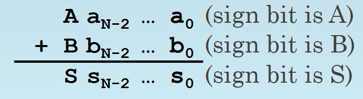

布尔逻辑(Boolean Logic)¶
布尔逻辑表达式将复杂的逻辑关系简化为基本的逻辑，并通过基本逻辑的运算来构建所需的逻辑表达式。这些表达式是数字电路设计的基础。
三种基本逻辑和Logic Completeness¶
对于三种最基本的逻辑NOT AND OR，需要掌握它们对应的真值表，书写形式（一般用A' AB A+B），以及图形表示
NOT AND OR合在一起，三者具有逻辑完备性，即它们可以表达世界上任何一种复杂的逻辑。这是为什么呢？
再复杂的逻辑都可以列出真值表（把逻辑表达式理解成一种函数，函数有多种表达形式，如解析式，表格式，图像式，逻辑表达式的字母形式就是一种解析式，而真值表就是一种表格式，它们表达的内容没区别，只是形式不同）列出真值表后，为了写出逻辑表达式，我们针对output是1的行，看input，如果input是1，那么就写这个input对应的字母，如果input是0，就写NOT input对应的字母，然后把所有input用AND组合起来。e.g inputABCD=1001的时候 output是1，那么就写AB'C'D 然后把每个output是1的行都这样写出来，再用OR连接，就是最终的逻辑表达式 e.g inputABCD = 0001的时候 output也是1 那么最后的function F = AB'C'D + A'B'C'D，用这样的方式，所有真值表都能转化成逻辑表达式。因此NOT AND OR具有逻辑完备性
逻辑完备性是非常重要的概念，逻辑表达式可能的情况非常多，不可能为每种情况创造一个逻辑关系，而希望用有限的逻辑关系表达无限的情况。
实际上有N个输入的情况，可能的逻辑表达式有\(2^{2^N}\)之多 如何理解\(2^{2^N}\)？1.N个input总共有\(2^N\)种可能的pattern，因为每个input可以选择是0还是1 e.g ABCD -> 2 * 2 * 2 * 2 = \(2^4\) （真值表总共有\(2^N\)行） 2.对于每个固定的pattern的输入 e.g ABCD = 1001 output可能的情况有2种（0/1），即真值表的每行有两种情况，所以总的情况有 2 * 2 * 2 * ...（乘\(2^N\)次，因为有\(2^N\)行） = \(2^{2^N}\)
知道了NOT AND OR逻辑完备性之后，我们如果能证明一个底层架构可以表示NOT AND OR三种逻辑，就相当于证明了它有逻辑完备性，可以表示世界上所有的逻辑关系
e.g1:下证NOR的logic completeness（即NOR一个逻辑，可以表达所有的逻辑表达式）
NOR：全0出1，有1出0 （即OR逻辑前面再加了个NOT）
- NOT A = A NOR A -> A如果是0，那么全0出1，A如果是1，那么有1出0，正好符合NOT逻辑
- A OR B = NOT(A NOR B) = (A NOR B) NOR (A NOR B) -> 负负得正，即然NOR是OR前面加个NOT，那么OR就是NOR前面再加个NOT，已知NOT可以用 A NOR A来实现
- A AND B = (NOT A) NOR (NOT B) = (A NOR A) NOR (B NOR B) -> NOR 是全0出1，AND是全1出1，所以把输入反一下就好了，相当于在每个输入前加个NOT
e.g1:下证NAND的logic completeness（即NAND一个逻辑，可以表达所有的逻辑表达式）
NAND：全1出0，有0出1 （即AND逻辑前面再加了个NOT）
- NOT A = A NAND A -> A如果是0，那么有0出1，A如果是1，那么全1出0，正好符合NOT逻辑
- A AND B = NOT (A NAND B) = (A NAND B) NAND (A NAND B) ->负负得正，即然NAND是AND前面加个NOT，那么AND就是NAND前面再加个NOT，已知NOT可以用 A NAND A来实现
- A OR B = (NOT A) NAND (NOT B) = (A NAND A) NAND (B NAND B) -> NAND 是有0出1，OR是有1出1，所以把输入反一下就好了，相当于在每个输入前加个NOT
2's Complement Overflow的逻辑表达式¶


V = ABS' + A'B'S ABS'是1的情况就是ABS = 110，即两个负数相加得到正数，overflow；A'B'S是1的情况就是ABS = 001,即两个正数相加得到负数，overflow（参考2's complement）
V = \(C_{n} \oplus C_{n-1}\) 最高位和次高位如果有且仅有一个进位，就是overflow，从概念的角度理解：
- 一正一负不会overflow -> 假设\(C_{n-1}\) = 1,因为一正一负A和B有且仅有一个是1，1 + 1 = 10，进位，所以\(C_{n}\)也是1， XOR之后为0；假设\(C_{n-1}\) = 0，因为一正一负A和B有且仅有一个是1，1 + 0 = 1，不进位，所以\(C_{n}\)也是1， XOR之后为0
- 两负得正数overflow -> 假设\(C_{n-1}\) = 1，因为两个负数AB全部是1，1 + 1 + 1 = 11，进位，\(C_{n}\) = 1，留下在最高位的数仍然是1（11去掉前面的1，剩下的还是1），结果仍然是负数，不overflow，XOR之后也是0；假设\(C_{n-1}\) = 0，因为两个负数AB全部是1，1 + 1 + 0 = 10，进位，\(C_{n}\) = 1，留在最高位的数是0，结果是正数，两个负数相加得正数，overflow，1 XOR 0 = 1
- 两正得负数overflow -> 假设\(C_{n-1}\) = 1，因为两个正数AB全部是0，0 + 0 + 1 = 1，不进位，\(C_{n}\) = 0，留下在最高位的数是1，结果变成负数，overflow，0 XOR 1之后是1；假设\(C_{n-1}\) = 0，因为两个正数AB全部是0，0 + 0 + 0 = 0，不进位，\(C_{n}\) = 0，留在最高位的数是0，结果是正数，不overflow，XOR的结果也是0
严谨的证明：画真值表，把每种情况列出来，最后发现\(C_{n} \oplus C_{n-1}\) 运算的结果和V = ABS' + A'B'S 一样，即证明这两个表达式完全等价。（ECE120的考试，证明逻辑表达式的等价，不用多想去用boolean运算法则，直接画真值表就行）